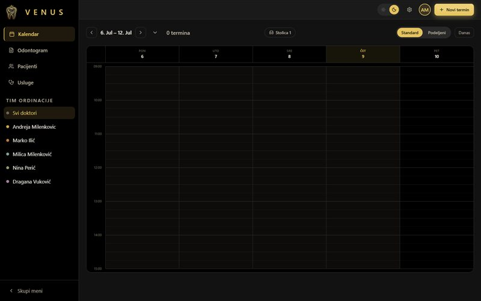

Online zakazivanje
Sistemi za zakazivanje termina i rezervacija koji rade 24/7. Pacijenti i gosti sami biraju termin, a vi dobijate uredan kalendar — bez propuštenih poziva.
Digitalna agencija za male biznise
Pravimo moderne sajtove, mobilne aplikacije, AI sadržaj i sisteme za online zakazivanje — skrojene za stomatološke ordinacije, restorane i kafiće.
Usluge
Tri oblasti u kojima vaš biznis dobija najviše — od prvog klika do zakazanog termina.
Sistemi za zakazivanje termina i rezervacija koji rade 24/7. Pacijenti i gosti sami biraju termin, a vi dobijate uredan kalendar — bez propuštenih poziva.
Brzi, moderni sajtovi i mobilne aplikacije koje odlično izgledaju na svakom uređaju i pretvaraju posetioce u klijente koji zakazuju i poručuju.
Tekstovi, vizuali i video napravljeni uz pomoć veštačke inteligencije, plus automatizacije koje odgovaraju na upite i potvrđuju termine umesto vas.
Studija slučaja
Telefon je zvonio samo u toku radnog vremena, a polovina poziva je ostajala neodgovorena. Novi pacijenti su odustajali i odlazili kod konkurencije.
Novi sajt sa online zakazivanjem i AI asistent koji odgovara na upite, predlaže slobodne termine i šalje potvrde — danju i noću.
Kalendar popunjen nedeljama unapred, bez ijednog propuštenog upita.
Prvi put ne razmišljamo o tome da li će telefon zvoniti. Termini se pune sami, a mi se konačno bavimo samo pacijentima.
IME PREZIME, stomatološka ordinacija
Rast online zakazivanja
+218%
za prvih šest meseci
u odnosu na prethodni period
Termine su zakazivale isključivo preko DM-a na Instagramu, poruke su se gubile, a duple rezervacije i nedolasci pravili su rupe u rasporedu.
Sistem za online zakazivanje povezan sa Instagramom i automatski podsetnici SMS-om/porukom dan pre termina, sa listom čekanja za otkazane termine.
Skoro nula nedolazaka i popunjen raspored, bez ručnog odgovaranja na svaku poruku.
Više ne provodim večeri odgovarajući na poruke — klijentkinje same izaberu termin, a ja samo radim svoj posao.
IME PREZIME, salon lepote
Pad nedolazaka na termine
−76%
za prva tri meseca
u odnosu na prethodni period
U špicu su porudžbine stizale telefonom, preko tri aplikacije i na šalteru istovremeno — greške u narudžbinama i duga čekanja terali su goste.
Objedinjeno online naručivanje sa sajta i AI asistent koji prima porudžbine van radnog vremena, predlaže dodatke i šalje potvrde sa vremenom preuzimanja.
Manje grešaka, kraća čekanja i veća prosečna vrednost porudžbine zahvaljujući automatskim predlozima.
Kuhinja konačno diše. Porudžbine su jasne, a gosti tačno znaju kad da dođu po svoje.
IME PREZIME, restoran brze hrane
Rast prosečne vrednosti porudžbine
+34%
za prvih šest meseci
u odnosu na prethodni period
Radovi
Izbor projekata koje smo dizajnirali, razvili i lansirali za naše klijente.
Živ sajt ordinacije Venus — online zakazivanje, tim i galerija. Klik otvara pregled preko stranice.
AI asistent koji odgovara klijentima i zakazuje termine. Klik otvara prezentaciju.
Venus aplikacija — gost zakazuje termin za par koraka. Klik otvara uživo pregled.
BurgerHouse — meni sa korpom i poručivanjem. Klik otvara pregled preko stranice.

Venus admin panel — kalendar, kartoteka, odontogram i cenovnik. Klik otvara uživo.
Za koga radimo
Medicinske i stomatološke ordinacije — sajt, online zakazivanje i automatski podsetnici koji smanjuju nedolaske, na jednom mestu.
Puni stolovi i gosti koji se vraćaju — online rezervacije, digitalni meniji i sadržaj koji privlači nove goste.
Saloni lepote, frizerski i kozmetički saloni — online zakazivanje, podsetnici i popunjen raspored bez ručnog odgovaranja na poruke.
Kontakt
Popunite formu — javljamo se u roku od 24 časa sa konkretnim predlogom.